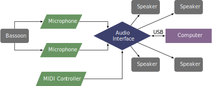

This piece was composed in 2018 as an homage to more than 300 victims of the Nicaraguan regime led by Daniel Ortega. It was written in collaboration with Dana Jessen and the SPLICE Institute. The piece can be obtained by contacting the composer at his website.
This piece requires four speakers, two placed in front of the audience and two placed behind the audience. Two microphones should be used to amplify the bassoon, one aimed toward the tone holes and another one aimed toward the bell. A MIDI controller or a separate performer will be necessary to run the Max/MSP patch. Additionally, a mixer or interface with four outputs is necessary.
A possible setup is shown below. 
This patch currently is a bit confusing when it is opened. The performer should push the third icon in the bottom toolbar to activate presentation mode. The interface should simplify and match what is shown in the screenshot section. From here, the performer should adjust the output of the delay line in the controls section of the patch and turn on the input. In the spatial visualization section the circles should begin moving. There are individual levels for the input, master output, and the output of each channel.
This piece constantly uses extended techniques. For half of the piece the reed is not attached to the bocal. The piece calls for multiphonics, tonguing the bocal without the reed, flutter-tonguing, timbral trills, singing into the bocal, variable rhythms, and improvisation using all of these techniques. It is probably beyond the capabilities of most undergraduate students but would be a possibility for graduate students.
For much of this piece, there is no straight tone. It is mostly percussive sounds with occasional trills. It features avant-garde styles of writing and is probably less accessible to the average audience. However it is a great example of electroacoustic music that intersects with politics and social issues.
©2025 by Benjamin Bradshaw
Logo ©2025 by Hannah Bradshaw